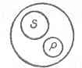
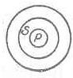

Kant: AA XVI, L §. 360-366. IX 123. 125. 129. 130. §. ... , Seite 717 |
|||||||
Zeile:
|
Text:
|
|
|
||||
| 01 | metaphysische Verhältnis besteht darin, ob der eine mit dem andern synthetisch | ||||||
| 02 | oder analytisch verbunden sey: |  |  | ||||
| 03 | synthetisch | analytisch | |||||
3217. υ--ψ. L 101. Zu L §. 363 „dictum de omni et nullo“: |
|||||||
| 05 | Nota notae est nota rei ipsius (g ist das principium der categorischen | ||||||
| 06 | schlüsse ): ist dieses dictum und zugleich der Grund der prima figura. | ||||||
3218. ω. L 101'. Zu L §. 363ff.: |
|||||||
| 08 | Das princip der Categorischen Vernunftschlüsse ist das dictum de | ||||||
| 09 | omni et nullo: Nota notae ets nota rei ipsius; repugnans notae etc. etc. | ||||||
| 10 | Das der Hypothetischen ist: a ratione ad rationatum valet conseqventia, | ||||||
| 11 | a negatione rationati ad negationem rationis itidem. | ||||||
| 12 | Das der Disjunctiven ist: a contradictorie oppositorum negatione | ||||||
| 13 | vnius (g ad affirmationem alterius ) valet conseqventia et viceversa | ||||||
| 14 | a positione vnius etc. (nicht so wie in den Hypothetischen, da nur (g der ) | ||||||
| 15 | umgek nur eine Schlusart in der Umkehrung galt). | ||||||
3219. ω. L 101'. Zu L §. 362ff.: |
|||||||
| 17 | Drey Principien für die 3 Schlusarten: 1. Principium contradictionis. | ||||||
| 18 | 2. rationis 3. exclusi medii -- -- | ||||||
| [ Seite 716 ] [ Seite 718 ] [ Inhaltsverzeichnis ] |
|||||||
;){kind=link}
;){kind=link}